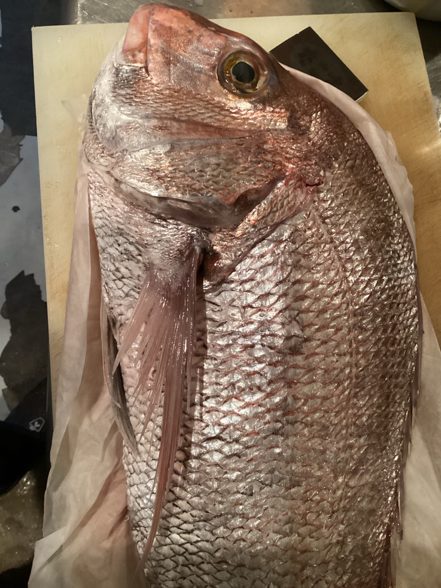
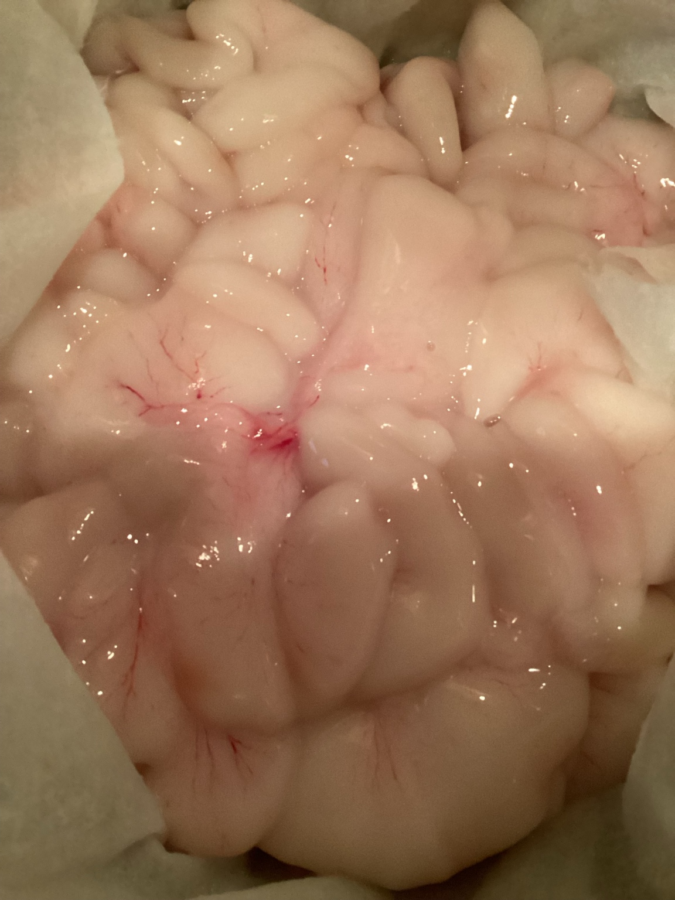
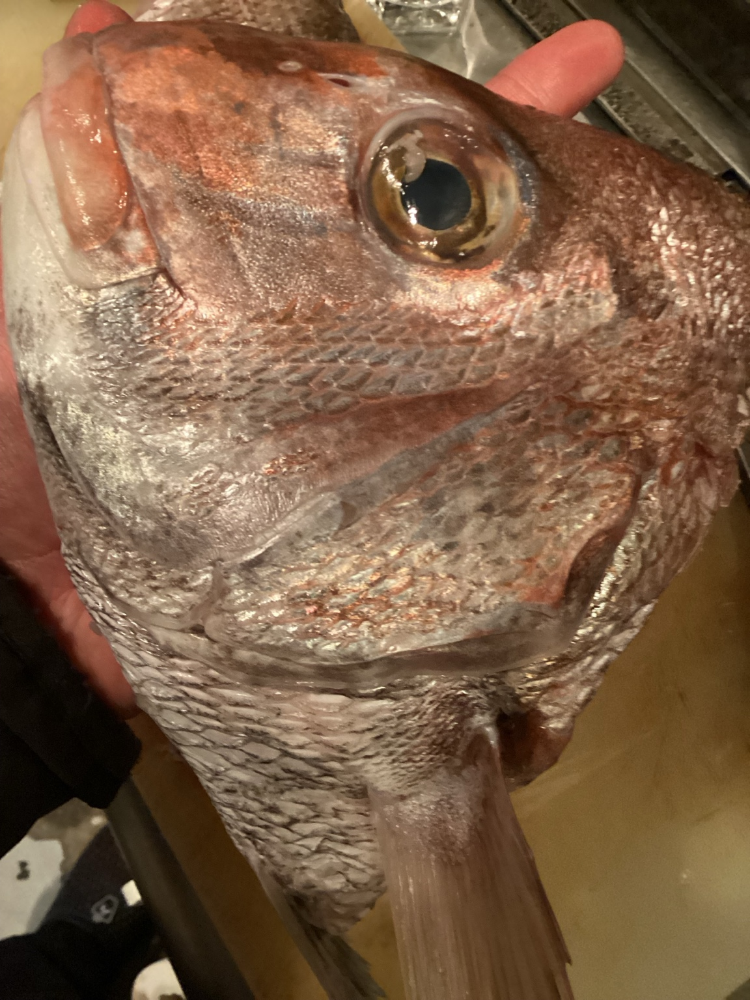

トップ > ブログ > 10月30日の仕入れ
特4の雲子（タラの白子）、淡路の天然鯛2.8kg。饗応 元に届いた食材を、店主提供の写真でご紹介します。
2026.10.30 ｜ 本日の饗応 元
10月30日は、特4の雲子（タラの白子）、淡路の天然鯛2.8kgを仕入れました。



掲載は2026年10月30日の仕入れ記録です。料理、価格、現在の提供状況はご予約時または店頭でお確かめください。
記事一覧へ戻る ｜ 料理・酒一覧を見る
京都・丸太町の饗応 元。通常18:00開店、予約なしの最終入店は23:00。アラカルトのお席予約も承ります。コースは2日前までにご予約ください。23:00までの電話予約なら、アラカルトは営業状況に応じて最長翌02:00まで対応します。